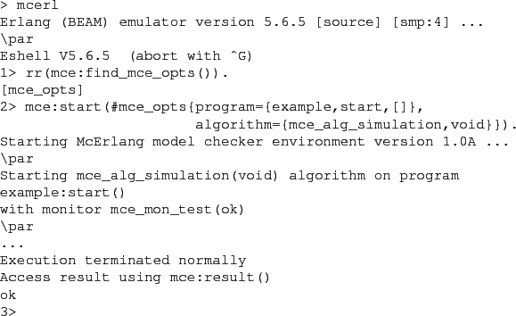

Next: Monitors Up: State Space Traversal Algorithms Previous: Algorithm Termination Contents
If you wish to allow your program to communicate with the outside McErlang (accept messages sent by other processes) the @sim_external_world@ option in @mce_opts@ should be set to true. An example specific scheduler can be specified using the @scheduler@ field in @mce_opts@. This algorithm does not require any initial argument.
Suppose as an example that we want to run the @example:start@
example in Section 1.3 using the simulation algorithm:

Aha, no error this time. This is because we only explored one execution trace.
Note that we in the first line
read in the record definition of mce_opts, so that we are allowed
to use the syntax @#mce_optsprogram=...@ in the Erlang shell.
In practise this algorithm can be used to throw away an initial segment of the behaviour of a program which is deemed uninteresting, to permit focusing on a latter part. A particular example is to check only a system after when it is has stabilised after the completion of the starting-up phase (perhaps programmed using the OTP supervisor behaviour @gen_supervisor@). It is a method to save memory space.
2010-07-05